Setting up the Solution¶
Here is our plan for this lesson:
- Create a Maestro Agentic Process Solution in Studio Web, starting from a template
- Add the necessary solution resources — connections, context grounding indexes, and storage buckets
Goal¶
Create the Benefit Claims Processing solution from a prepared template, then link the resources the agentic process needs later: two Integration Service connections, three Context Grounding indexes, and two Orchestrator storage buckets.
Steps¶
1. Create an Agentic Process solution¶
Let's start by creating a new Agentic Process from a previously created template.
In the Studio Web home page go to Templates and select the Benefit Claims Processing Template. This will create a new solution, based on a project that was previously submitted as a template.
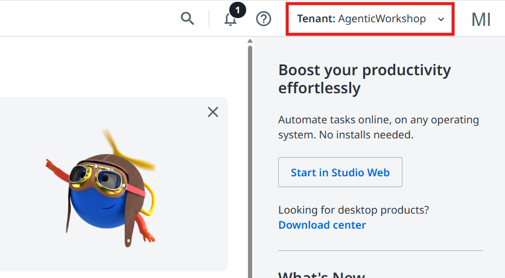
Check your tenant first
Make sure the AgenticWorkshop tenant is selected from the top right corner.
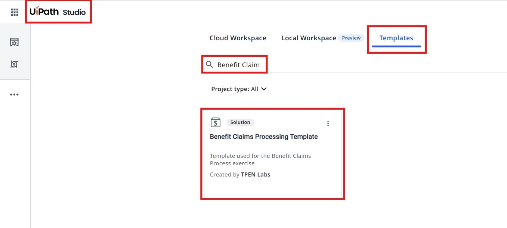
Creating a new project in Studio Web.
You will notice that this will create a new UiPath Solution.
A solution bundles together multiple components (processes, assets, queues, etc.) developed on the UiPath platform that work together to automate a business use case. In the UiPath context, a solution can be as simple as a Studio workflow/process, or as complex as a combination of multiple workflows or processes, agents, apps, assets, queues, storage buckets, Data service entities, etc.
Our Benefit Claims solution contains a few components:
- The Agentic Process (Benefit Claims Processing)
- Process Benefits Application — an RPA Workflow that uses UiPath IXP — Unstructured Documents to extract data from the Benefits Claim application.
- Addition Tool, Multiplication Tool, Subtraction Tool — a few RPA workflows which will be used as tools by AI Agents
- DownloadFileFromStorageBucket and UploadFileToStorageBucket — two RPA workflows which will help with handling files from Orchestrator Storage Buckets.
- A UiPath App, used to present claim details and decisions to Case Workers (Action App).
The Unstructured and complex documents capability enhances the capability to handle complex unstructured documents, and uses generative AI to map fields and field groups as defined in the extraction schema and predict them with confidence and accuracy. This advanced feature is adept at extracting data from intricate elements like complex tables, charts, or graphs, and it structures the output effectively.
The process involves:
- Reviewing initial model predictions.
- Modifying prompt instructions iteratively based on review outcomes.
- Annotating documents to gather ground truth for validation and to inform refining the performance of data extraction.
Extracting data from unstructured documents, such as contracts, long invoices, or other similar documents, requires a systematic and intelligent approach due to the variations in format, language, and layout.
2. Rename your solution¶
The art of keeping your projects organized is rooted in habits — and habits are nurtured through consistent practice.
— Generated by a wise ancient LLM
So, don't forget to reinforce your good habits and rename our solution:
- right-click on the solution and select Rename
- let's give a meaningful name to our solution. We can name it:
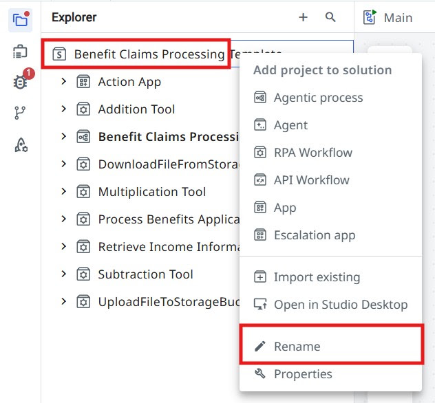
Adding resources to our solution¶
Next, let's link a few resources that our agentic process is going to use.
3. Configure the Integration Service connections¶
Let's start with the Integration Service Connections.
In a nutshell, Integration Service does the following:
- Enables automation with an out-of-the-box library of connectors.
- Helps setting up and managing connections easily with standardized authentication.
- Enables kicking off automations with server-side triggers or events.
- Provides curated activities and events (with additional data filters) for ease of use.
- Simplifies automation design by providing a uniform experience across all Studio designers.
We are going to use a few connections throughout our process, so let us go ahead and configure them.
In the bottom-left panel of the solution, expand the Connections dropdown.
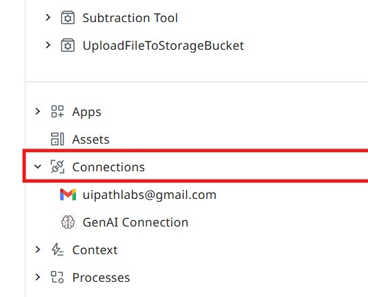
Configure the Gmail connection as in the picture from the right.
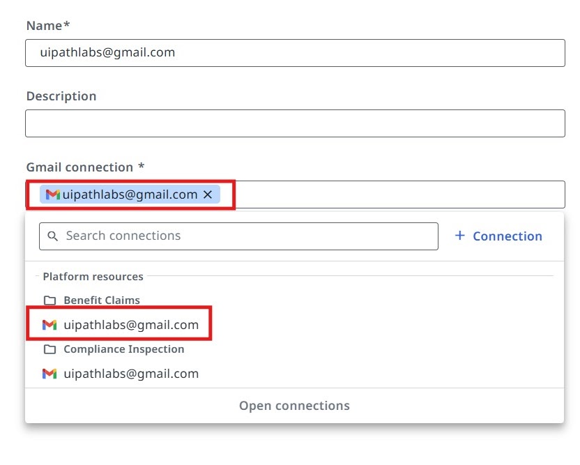
Configure the GenAI connection as in the picture from the right.
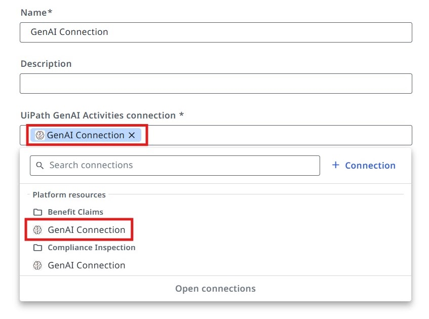
4. Add the Context Grounding indexes¶
In order for our agents to generate meaningful answers and decisions, we need to ground their knowledge to relevant Benefit Claims regulations and guidelines. To do that, we are going to use Context Grounding.
Context Grounding allows you to bring in your data to generate more accurate, reliable GenAI predictions. You can create representative indexes and embeddings of business data that UiPath GenAI features can reference for contextual evidence at runtime.
Let's add a few Context Grounding Indexes to our solution, which we are going to use later for our agents.
Configure the Eligibility context as in the picture below:
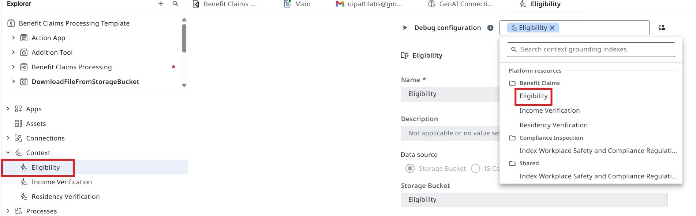
Configure the Income Verification context as in the picture below:
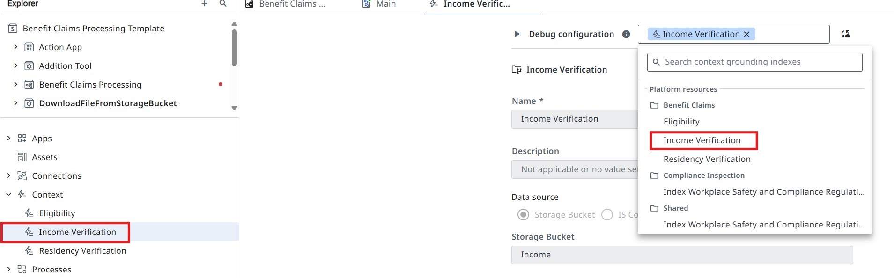
Configure the Residency Verification context as in the picture below:
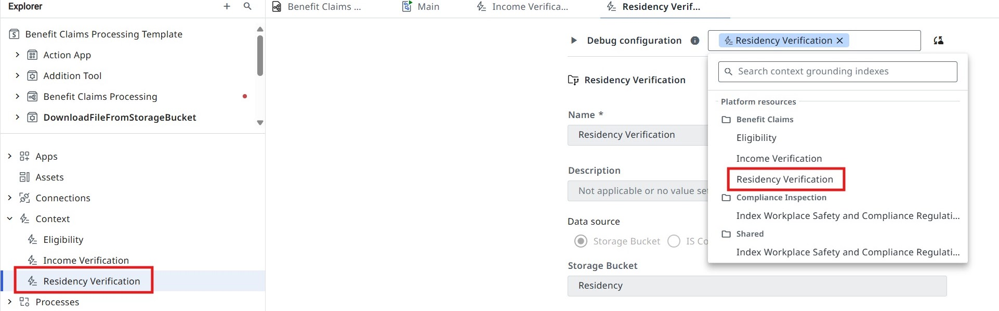
5. Connect the Storage Buckets¶
In our scenario, the process relies on files submitted by the applicants for benefit claims. We will store these files inside Orchestrator Storage Buckets.
Let's connect the Storage Buckets to our solution.
Configure the Eligibility storage bucket as in the picture below:
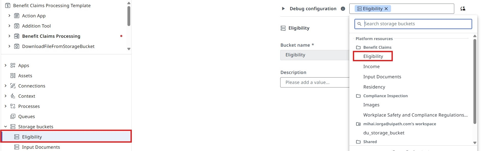
Configure the Input Documents storage bucket as in the picture below:
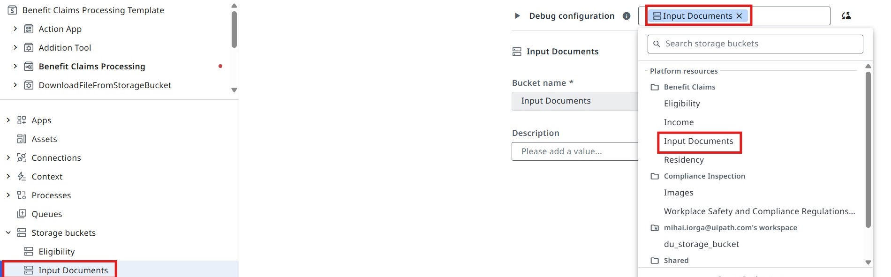
Time to move to the next one!